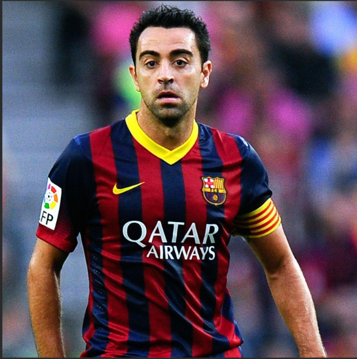
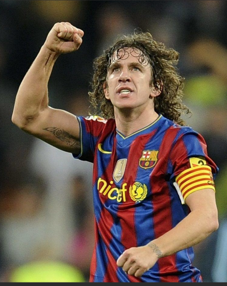

Lionel Messi
Posició: Davanter
Edat actual: 38 anys
Gols marcats: 672
Etapa al Club: 2004 - 2021
Gols marcats: 672
Etapa al Club: 2004 - 2021

Xavi Hernández
Posició: Migcampista
Edat actual: 45 anys
Gols marcats: 85
Etapa al Club: 1998 - 2015
Gols marcats: 85
Etapa al Club: 1998 - 2015

Carles Puyol
Posició: Defensa Central
Edat actual: 47 anys
Gols marcats: 18
Etapa al Club: 1999 - 2014
Gols marcats: 18
Etapa al Club: 1999 - 2014

Andrés Iniesta
Posició: Migcampista
Edat actual: 41 anys
Gols marcats: 57
Etapa al Club: 2002 - 2018
Gols marcats: 57
Etapa al Club: 2002 - 2018

Ronaldinho
Posició: Davanter
Edat actual: 45 anys
Gols marcats: 94
Etapa al Club: 2003 - 2008
Gols marcats: 94
Etapa al Club: 2003 - 2008

Ronaldo Nazário
Posició: Davanter
Edat actual: 49 anys
Gols marcats: 47
Etapa al Club: 1996 - 1997
Gols marcats: 47
Etapa al Club: 1996 - 1997